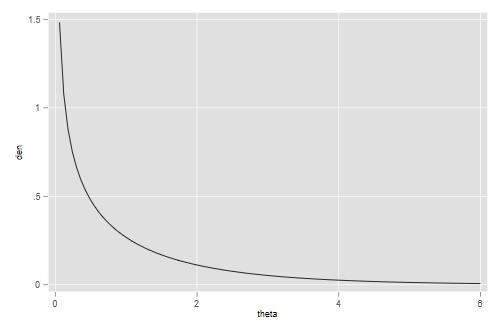
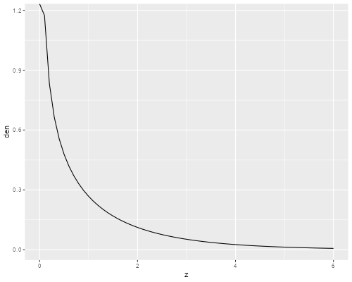
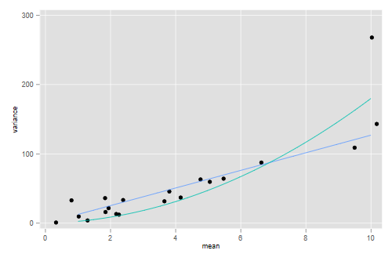
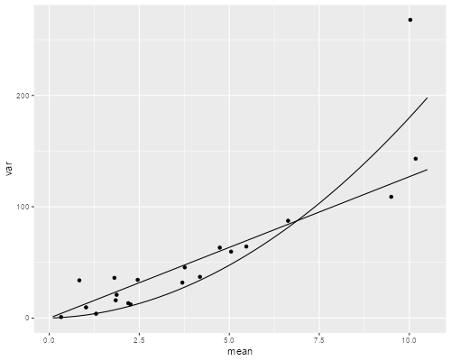

Cameron and Trivedi (2009) have some interesting data on the number
of office-based doctor visits by adults aged 25-64 based on the 2002
Medical Expenditure Panel Survey. We will use data for the most recent
wave, available in the datasets section of the website as
docvis.dta.
. use https://grodri.github.io/datasets/docvis.dta, clear (Doctor visits from 2002 MEPS, Cameron and Trivedi (2009))
> library(haven)
> dv <- read_dta("https://grodri.github.io/datasets/docvis.dta")
(a) Fit a Poisson regression model with the number of doctor visits
(docvis), as the outcome. We will use the same predictors
as Cameron and Trivedi, namely health insurance status
(private), health status (chronic), gender
(female) and income (income), but will add two
indicators of ethnicity (black and hispanic).
There are many more variables one could add, but we’ll keep things
simple.
. glm docvis private chronic female income black hispanic, ///
> family(poisson) nolog
Generalized linear models Number of obs = 4,412
Optimization : ML Residual df = 4,405
Scale parameter = 1
Deviance = 27870.99397 (1/df) Deviance = 6.327127
Pearson = 55945.39004 (1/df) Pearson = 12.70043
Variance function: V(u) = u [Poisson]
Link function : g(u) = ln(u) [Log]
AIC = 8.332044
Log likelihood = -18373.48862 BIC = -9096.133
─────────────┬────────────────────────────────────────────────────────────────
│ OIM
docvis │ Coefficient std. err. z P>|z| [95% conf. interval]
─────────────┼────────────────────────────────────────────────────────────────
private │ .7203441 .0281465 25.59 0.000 .665178 .7755102
chronic │ 1.068487 .0158639 67.35 0.000 1.037395 1.09958
female │ .4775823 .0160303 29.79 0.000 .4461636 .5090011
income │ .0030057 .0002476 12.14 0.000 .0025204 .003491
black │ -.1867826 .0365022 -5.12 0.000 -.2583256 -.1152395
hispanic │ -.3510353 .0232585 -15.09 0.000 -.3966211 -.3054495
_cons │ -.0499702 .0306643 -1.63 0.103 -.1100711 .0101307
─────────────┴────────────────────────────────────────────────────────────────
. estimates store poi
> mp <- glm(docvis ~ private + chronic + female + income + black + hispanic,
+ data = dv, family = poisson())
> summary(mp)
Call:
glm(formula = docvis ~ private + chronic + female + income +
black + hispanic, family = poisson(), data = dv)
Deviance Residuals:
Min 1Q Median 3Q Max
-4.7947 -2.0468 -1.1881 0.2755 24.2026
Coefficients:
Estimate Std. Error z value Pr(>|z|)
(Intercept) -0.0499702 0.0306640 -1.630 0.103
private 0.7203442 0.0281462 25.593 < 2e-16 ***
chronic 1.0684873 0.0158638 67.354 < 2e-16 ***
female 0.4775823 0.0160303 29.793 < 2e-16 ***
income 0.0030057 0.0002476 12.139 < 2e-16 ***
black -0.1867826 0.0365022 -5.117 3.1e-07 ***
hispanic -0.3510353 0.0232584 -15.093 < 2e-16 ***
---
Signif. codes: 0 '***' 0.001 '**' 0.01 '*' 0.05 '.' 0.1 ' ' 1
(Dispersion parameter for poisson family taken to be 1)
Null deviance: 36984 on 4411 degrees of freedom
Residual deviance: 27871 on 4405 degrees of freedom
AIC: 36761
Number of Fisher Scoring iterations: 6
(b) Interpret the coefficient of black and test its
significance using a Wald test and a likelihood ratio test.
. di exp(_b[black]) - 1 -.17037592 . di (_b[black]/_se[black])^2 26.183881 . quietly glm docvis private chronic female income hispanic, /// > family(poisson) . lrtest . poi Likelihood-ratio test Assumption: . nested within poi LR chi2(1) = 27.67 Prob > chi2 = 0.0000
> b <- coef(mp)
> exp(b["black"])
black
0.8296241
> se <- sqrt(diag(vcov(mp)))
> (b["black"]/se["black"])^2
black
26.18392
> mpb <- update(mp, ~ . - black)
> anova(mpb, mp)
Analysis of Deviance Table
Model 1: docvis ~ private + chronic + female + income + hispanic
Model 2: docvis ~ private + chronic + female + income + black + hispanic
Resid. Df Resid. Dev Df Deviance
1 4406 27899
2 4405 27871 1 27.67
Blacks report 17% fewer visits to the doctor than white with the same
insurance, health status, gender and income. The z-test of -5.12 in the
output is equivalent to a χ2 of 26.18 on one d.f. and is
highly significant. The likelihood ratio test obtained by fitting the
model without black gives a similar χ2 of 27.67 on one d.f.
(c) Compute a 95% confidence interval for the effect of private insurance and interpret this result in terms of doctor visits.
. estimates restore poi (results poi are active now) . scalar cv = invnormal(0.975) . di exp(_b[private] - cv * _se[private]) 1.9448367 . di exp(_b[private] + cv * _se[private]) 2.1716999
> ci <- b["private"] + c(-1, 1) * qnorm(0.975) * se["private"] > exp(ci) [1] 1.944838 2.171699
We can obtain a 95% confidence interval by exponentiating the bounds
reported in the output. In Stata you can use the
eform option. We find that respondents with private
insurance visit the doctor between 1.94 and 2.17 times as often as
respondents without insurance who have the same observed
characteristics, namely gender, ethnicity, health status and income.
(d) Compute the deviance and Pearson chi-squared statistics for this model. Does the model fit the data? Is there evidence of overdispersion?
> deviance(mp) [1] 27870.99 > pr <- residuals(mp, "pearson") > sum(pr^2) [1] 55945.39
The deviance of 27,870 on 4,405 d.f. is highly significant and the Pearson χ2 of 55,945 is even worse. The model clearly does not fit the data. There is overwhelming evidence of overdispersion. In terms of Pearson’s χ2, the variance is 13 times the mean.
(e) Predict the proportion expected to have exactly zero doctor visits and compare with the observed proportion. You will find the formula for Poisson probabilities in the notes. The probability of zero is simply e−μ.
. predict mupoi
(option mu assumed; predicted mean docvis)
. gen zpoi = exp(-mupoi)
. gen zobs = docvis == 0
. sum zpoi zobs
Variable │ Obs Mean Std. dev. Min Max
─────────────┼─────────────────────────────────────────────────────────
zpoi │ 4,412 .1127876 .1392959 2.89e-07 .5118896
zobs │ 4,412 .3640073 .4812052 0 1
> mup <- exp(predict(mp)) > zp <- exp(-mup) > c(mean(zp), mean(dv$docvis == 0)) [1] 0.1127876 0.3640073
The Poisson model substantially underestimates the probability of zero doctor visits, predicting 11.3% when in fact 36.4% of respondents report zero visits.
(a) Suppose the variance is proportional to the mean rather than equal to the mean. Estimate the proportionality parameter using Pearson’s chi-squared and use this estimate to correct the standard errors.
We know from the previous result that the proportionality factor is
12.7. We therefore need to inflate the standard errors by a factor of
√12.7 = 3.564 or almost four. In Stata we can do
this calculation using the scale(x2) option.
. glm docvis private chronic female income black hispanic, ///
> family(poisson) scale(x2) nolog
Generalized linear models Number of obs = 4,412
Optimization : ML Residual df = 4,405
Scale parameter = 1
Deviance = 27870.99397 (1/df) Deviance = 6.327127
Pearson = 55945.39004 (1/df) Pearson = 12.70043
Variance function: V(u) = u [Poisson]
Link function : g(u) = ln(u) [Log]
AIC = 8.332044
Log likelihood = -18373.48862 BIC = -9096.133
─────────────┬────────────────────────────────────────────────────────────────
│ OIM
docvis │ Coefficient std. err. z P>|z| [95% conf. interval]
─────────────┼────────────────────────────────────────────────────────────────
private │ .7203441 .1003075 7.18 0.000 .523745 .9169432
chronic │ 1.068487 .0565351 18.90 0.000 .9576805 1.179294
female │ .4775823 .0571282 8.36 0.000 .3656131 .5895516
income │ .0030057 .0008824 3.41 0.001 .0012762 .0047352
black │ -.1867826 .1300854 -1.44 0.151 -.4417453 .0681801
hispanic │ -.3510353 .0828879 -4.24 0.000 -.5134926 -.188578
_cons │ -.0499702 .1092804 -0.46 0.647 -.2641558 .1642154
─────────────┴────────────────────────────────────────────────────────────────
(Standard errors scaled using square root of Pearson X2-based dispersion.)
. scalar phi = e(dispers_ps) // for later use
> phi <- sum(pr^2)/df.residual(mp); phi
[1] 12.70043
> summary(update(mp, family=quasipoisson()))
Call:
glm(formula = docvis ~ private + chronic + female + income +
black + hispanic, family = quasipoisson(), data = dv)
Deviance Residuals:
Min 1Q Median 3Q Max
-4.7947 -2.0468 -1.1881 0.2755 24.2026
Coefficients:
Estimate Std. Error t value Pr(>|t|)
(Intercept) -0.0499702 0.1092799 -0.457 0.647501
private 0.7203442 0.1003069 7.181 8.06e-13 ***
chronic 1.0684873 0.0565352 18.899 < 2e-16 ***
female 0.4775823 0.0571283 8.360 < 2e-16 ***
income 0.0030057 0.0008824 3.406 0.000665 ***
black -0.1867826 0.1300858 -1.436 0.151118
hispanic -0.3510353 0.0828879 -4.235 2.33e-05 ***
---
Signif. codes: 0 '***' 0.001 '**' 0.01 '*' 0.05 '.' 0.1 ' ' 1
(Dispersion parameter for quasipoisson family taken to be 12.70051)
Null deviance: 36984 on 4411 degrees of freedom
Residual deviance: 27871 on 4405 degrees of freedom
AIC: NA
Number of Fisher Scoring iterations: 6
(b) What happens to the significance of the black coefficient once we allow for extra-Poisson variation? Could we test this coefficient using a likelihood ratio test. Explain.
> seo <- sqrt(phi) * se
> b["black"] / seo["black"]
black
-1.435847
Once we adjust for overdispersion the black coefficient is no longer significant, with a z-statistic of -1.44 equivalent to a χ2 of just 2.07. We have no evidence that blacks differ from comparable whites in the number of doctor visits. We can’t do a likelihood ratio test because we haven’t specified a likelihood.
(c) Compare the standard errors adjusted for over-dispersion with the robust or “sandwich” estimator of the standard errors. To obtain robust standard errors we follow the procedure outlined in this log.
. estimates store odp
. glm docvis private chronic female income black hispanic, ///
> family(poisson) vce(robust) nolog
Generalized linear models Number of obs = 4,412
Optimization : ML Residual df = 4,405
Scale parameter = 1
Deviance = 27870.99397 (1/df) Deviance = 6.327127
Pearson = 55945.39004 (1/df) Pearson = 12.70043
Variance function: V(u) = u [Poisson]
Link function : g(u) = ln(u) [Log]
AIC = 8.332044
Log pseudolikelihood = -18373.48862 BIC = -9096.133
─────────────┬────────────────────────────────────────────────────────────────
│ Robust
docvis │ Coefficient std. err. z P>|z| [95% conf. interval]
─────────────┼────────────────────────────────────────────────────────────────
private │ .7203441 .1133685 6.35 0.000 .498146 .9425423
chronic │ 1.068487 .0562956 18.98 0.000 .95815 1.178825
female │ .4775823 .0582232 8.20 0.000 .3634669 .5916978
income │ .0030057 .001117 2.69 0.007 .0008164 .005195
black │ -.1867826 .1169954 -1.60 0.110 -.4160893 .0425241
hispanic │ -.3510353 .086672 -4.05 0.000 -.5209094 -.1811612
_cons │ -.0499702 .1230406 -0.41 0.685 -.2911253 .1911849
─────────────┴────────────────────────────────────────────────────────────────
. estimates table poi odp ., se
─────────────┬───────────────────────────────────────
Variable │ poi odp Active
─────────────┼───────────────────────────────────────
private │ .72034413 .72034413 .72034413
│ .02814649 .1003075 .11336849
chronic │ 1.0684873 1.0684873 1.0684873
│ .01586387 .05653512 .05629556
female │ .47758234 .47758234 .47758234
│ .01603029 .0571282 .05822322
income │ .00300568 .00300568 .00300568
│ .00024761 .00088241 .00111701
black │ -.18678259 -.18678259 -.18678259
│ .03650223 .13008541 .11699538
hispanic │ -.35103531 -.35103531 -.35103531
│ .02325851 .08288788 .08667204
_cons │ -.04997019 -.04997019 -.04997019
│ .0306643 .10928039 .12304056
─────────────┴───────────────────────────────────────
Legend: b/se
> library(sandwich)
> vce <- vcovHC(mp, type="HC1")
> ser <- sqrt(diag(vce))
> cbind(se, seo, ser)
se seo ser
(Intercept) 0.0306640486 0.1092794988 0.123124498
private 0.0281462298 0.1003065813 0.113445771
chronic 0.0158638443 0.0565350315 0.056333916
female 0.0160302626 0.0571281073 0.058262881
income 0.0002476067 0.0008824125 0.001117772
black 0.0365022047 0.1300853221 0.117074850
hispanic 0.0232584294 0.0828876037 0.086731010
The adjusted and robust estimates of standard errors are very similar and both much larger than the Poisson standard errors. (In case you are interested, the ratio of the robust to Poisson standard errors in this model is between 3.2 and 4.5.)
(a) Fit a negative binomial regression model using the same outcome and predictors as in part 1.a. Comment on any remarkable changes in the coefficients.
. nbreg docvis private chronic female income black hispanic, nolog
Negative binomial regression Number of obs = 4,412
LR chi2(6) = 1119.19
Dispersion: mean Prob > chi2 = 0.0000
Log likelihood = -9829.3167 Pseudo R2 = 0.0539
─────────────┬────────────────────────────────────────────────────────────────
docvis │ Coefficient Std. err. z P>|z| [95% conf. interval]
─────────────┼────────────────────────────────────────────────────────────────
private │ .8086593 .0607191 13.32 0.000 .689652 .9276665
chronic │ 1.119804 .045522 24.60 0.000 1.030583 1.209026
female │ .544408 .0446949 12.18 0.000 .4568075 .6320084
income │ .0037342 .0008076 4.62 0.000 .0021515 .005317
black │ -.3055959 .0985613 -3.10 0.002 -.4987724 -.1124193
hispanic │ -.3898981 .0563762 -6.92 0.000 -.5003934 -.2794028
_cons │ -.200886 .0680787 -2.95 0.003 -.3343179 -.0674542
─────────────┼────────────────────────────────────────────────────────────────
/lnalpha │ .5306513 .0290657 .4736836 .587619
─────────────┼────────────────────────────────────────────────────────────────
alpha │ 1.700039 .0494128 1.605899 1.799698
─────────────┴────────────────────────────────────────────────────────────────
LR test of alpha=0: chibar2(01) = 1.7e+04 Prob >= chibar2 = 0.000
. scalar sig2 = e(alpha) // for later use
. estimates store nbreg
. estimates table poi nbreg
─────────────┬──────────────────────────
Variable │ poi nbreg
─────────────┼──────────────────────────
docvis │
private │ .72034413 .80865928
chronic │ 1.0684873 1.1198042
female │ .47758234 .54440796
income │ .00300568 .00373425
black │ -.18678259 -.30559588
hispanic │ -.35103531 -.38989811
_cons │ -.04997019 -.20088605
─────────────┼──────────────────────────
/lnalpha │ .53065128
─────────────┴──────────────────────────
We need glm.nb() in the MASS
package.
> library(MASS)
> mnb <- glm.nb(docvis ~ private + chronic + female + income + black + hispanic,
+ data = dv)
> summary(mnb)
Call:
glm.nb(formula = docvis ~ private + chronic + female + income +
black + hispanic, data = dv, init.theta = 0.5882217452, link = log)
Deviance Residuals:
Min 1Q Median 3Q Max
-1.9182 -1.1895 -0.5376 0.0767 9.0036
Coefficients:
Estimate Std. Error z value Pr(>|z|)
(Intercept) -0.2008860 0.0678193 -2.962 0.00306 **
private 0.8086593 0.0621755 13.006 < 2e-16 ***
chronic 1.1198042 0.0459214 24.385 < 2e-16 ***
female 0.5444080 0.0447150 12.175 < 2e-16 ***
income 0.0037342 0.0007852 4.756 1.98e-06 ***
black -0.3055959 0.0994855 -3.072 0.00213 **
hispanic -0.3898981 0.0571454 -6.823 8.92e-12 ***
---
Signif. codes: 0 '***' 0.001 '**' 0.01 '*' 0.05 '.' 0.1 ' ' 1
(Dispersion parameter for Negative Binomial(0.5882) family taken to be 1)
Null deviance: 5885.8 on 4411 degrees of freedom
Residual deviance: 4571.7 on 4405 degrees of freedom
AIC: 19675
Number of Fisher Scoring iterations: 1
Theta: 0.5882
Std. Err.: 0.0171
2 x log-likelihood: -19658.6330
> bnb <- coef(mnb)
> cbind(b, bnb)
b bnb
(Intercept) -0.049970228 -0.200886049
private 0.720344181 0.808659282
chronic 1.068487258 1.119804214
female 0.477582342 0.544407965
income 0.003005676 0.003734245
black -0.186782591 -0.305595880
hispanic -0.351035309 -0.389898111
The estimates are very similar except for ethnicity, where the coefficient of black reflects a much larger negative effect, going from -0.187 to -0.306. Another change of note, but of smaller magnitude, is the coefficient of insurance, which now reflects a larger effect.
(b) Interpret the coefficient of black and test its significance using a Wald test and a likelihood ratio test. Compare your results with parts 1.b and 2.b
. di exp(_b[black]) - 1 -.26331573 . di (_b[black] / _se[black])^2 9.6135184 . estimates store nbreg . quietly nbreg docvis private chronic female income hispanic . lrtest . nbreg Likelihood-ratio test Assumption: . nested within nbreg LR chi2(1) = 9.07 Prob > chi2 = 0.0026
> exp(bnb["black"])
black
0.7366843
> senb <- sqrt(diag(vcov(mnb)))
> (bnb["black"]/senb["black"])^2
black
9.435735
> mnbb <- update(mnb, ~ . - black)
> anova(mnbb, mnb)
Likelihood ratio tests of Negative Binomial Models
Response: docvis
Model theta Resid. df
1 private + chronic + female + income + hispanic 0.5866302 4406
2 private + chronic + female + income + black + hispanic 0.5882217 4405
2 x log-lik. Test df LR stat. Pr(Chi)
1 -19667.71
2 -19658.63 1 vs 2 1 9.074465 0.002592035
We estimate that blacks have 26.3% fewer visits to the doctor than comparable whites. The effect is significant, with a Wald test of z = 3.10, equivalent to a χ2 of 9.61 on one d.f., and a likelihood ratio χ2 of 9.07, also on one d.f.
The magnitude of the effect is larger than estimated under a Poisson model. The standard error is larger than the Poisson, but comparable to the overdispersed Poisson. On balance the effect turns out to be significant.
(c) Predict the percent of respondents with zero doctor visits according to this model and compare with part 2.c. You will find a formula for negative binomial probabilities in the addendum to the notes. The probability of zero is (β/(μ + β))α where α = β = 1/σ2.
. estimates restore nbreg
(results nbreg are active now)
. predict munb
(option n assumed; predicted number of events)
. scalar ab = exp(- _b[/lnalpha])
. gen znb = (ab/(munb + ab))^ab
. sum znb
Variable │ Obs Mean Std. dev. Min Max
─────────────┼─────────────────────────────────────────────────────────
znb │ 4,412 .3658973 .1374207 .1313962 .6768509
> ab <- mnb$theta > munb <- exp(predict(mnb)) > znb <- (ab/(munb + ab))^ab > mean(znb) [1] 0.3658973
We predict that 36.6% of respondents will have zero doctor visits. Much better than the Poisson estimate of 11.3% and remarkably close to the observed value of 36.4%
(d) Interpret the estimate of σ2 in this model and test its significance, noting carefully the distribution of the criterion.
> -2 * (logLik(mp) - logLik(mnb)) 'log Lik.' 17088.34 (df=7)
The estimate of 1.7 reflects substantial unobserved heterogeneity in doctor visits, even after we take into account the available indicators of insurance and health status, gender, income and ethnicity. The χ2 statistic of 17,000 is clearly significant, exceeding by far the conservative critical value of 3.84, and hence even more significant if we treated it as a 50:50 mixture of χ2’s with 0 and 1 d.f.
One way to assess the magnitud of this effect is to compute quartiles of the gamma distribution with mean 1 and variance 1.7
. mata: invgammap(1/1.7, (1..3):/4) :* 1.7
1 2 3
┌───────────────────────────────────────────┐
1 │ .1396390685 .5186830327 1.35320038 │
└───────────────────────────────────────────┘
> qgamma(1:3/4, shape = mnb$theta, scale = 1/mnb$theta) [1] 0.1396333 0.5186743 1.3531969
In terms of unobserved characteristics we see that respondents at the first quartile had 86% fewer visits than expected, those at the median had 48% fewer than expected, and those at the third quartile had 35% more than expected. The fact that the median is so far below the mean indicates a very long right tail, as shown in the next figure
. gen theta = _n*6/100 in 1/100 (4,312 missing values generated) . gen den = gammaden(1/1.7, 1.7, 0, theta) (4,312 missing values generated) . line den theta . graph export ps4fig1.png, width(500) replace file ps4fig1.png saved as PNG format
> qgamma(1:3/4, shape = mnb$theta, scale = 1/mnb$theta)
[1] 0.1396333 0.5186743 1.3531969
> library(ggplot2)
> z <- seq(0, 6, .1)
> gd <- data.frame(z,
+ den = dgamma(z, shape=mnb$theta, scale=1/mnb$theta))
> ggplot(gd, aes(z, den)) + geom_line()
> ggsave("ps4fig1r.png", width=500/72, height = 400/72, dpi=72)
 
Gamma Density with Variance 1.7
(e) Use predicted values from this model to divide the sample into
twenty groups of about equal size, compute the mean and variance of
docvis in each group, and plot these values. Superimpose
curves representing the over-dispersed Poisson and negative binomial
variance functions and comment.
. egen nbg = cut(munb), group(20) . preserve . collapse (mean) docvis (sd) sd=docvis, by(nbg) . gen var = sd^2 . scatter var docvis /// > || function y = phi*x, range(1 10) /// > || function y = x * (1 + sig2*x), range(1 10) /// > xtitle(mean) ytitle(variance) legend(off) . graph export ps4fig2.png, width(500) replace file ps4fig2.png saved as PNG format . restore
> g <- cut(munb, breaks=quantile(munb, seq(0, 100, 5)/100))
> mv <- data.frame(
+ mean = tapply(dv$docvis, g, mean),
+ var = tapply(dv$docvis, g, var) )
> sig2 <- 1/mnb$theta
> mc <- seq(0, 10, .1)
> pv <- data.frame(mc = mc,
+ odv = mc * phi,
+ nbv = mc * (1 + sig2 * mc))
> p <- ggplot(mv, aes(mean, var)) + geom_point()
> odvar <- function(x) phi * x
> nbvar <- function(x) x * (1 + sig2 * x)
> p + stat_function(fun = odvar) + stat_function(fun=nbvar) + xlim(0.1, 10.5)
> ggsave("ps4fig2r.png", width=500/72, height=400/72, dpi=72)
 
Poisson and Negative Binomial Variance Functions
The situation at the high end is not clear at all, as one of the groups happens to have a much larger variance than its neighbors. The quadratic function comes closer to this point at the expense of a poorer fit through most of the range. On balance it seems to provide a better compromise at the high end, so I would say that the negative binomial is marginally better than the overdispersed Poisson.
(a) Try a zero-inflated Poisson model with the same predictors of part 1a in both the Poisson and inflate equations.
. local predictors private chronic female income black hispanic
. zip docvis `predictors', inflate(`predictors')
Fitting constant-only model:
Iteration 0: log likelihood = -19602.098
Iteration 1: log likelihood = -17533.867
Iteration 2: log likelihood = -17341.513
Iteration 3: log likelihood = -17340.808
Iteration 4: log likelihood = -17340.808
Fitting full model:
Iteration 0: log likelihood = -17340.808
Iteration 1: log likelihood = -16021.733
Iteration 2: log likelihood = -15956.936
Iteration 3: log likelihood = -15956.73
Iteration 4: log likelihood = -15956.73
Zero-inflated Poisson regression Number of obs = 4,412
Inflation model: logit Nonzero obs = 2,806
Zero obs = 1,606
LR chi2(6) = 2768.16
Log likelihood = -15956.73 Prob > chi2 = 0.0000
─────────────┬────────────────────────────────────────────────────────────────
docvis │ Coefficient Std. err. z P>|z| [95% conf. interval]
─────────────┼────────────────────────────────────────────────────────────────
docvis │
private │ .3278247 .0289218 11.33 0.000 .2711389 .3845104
chronic │ .6826474 .0160441 42.55 0.000 .6512016 .7140933
female │ .2814155 .0162471 17.32 0.000 .2495718 .3132593
income │ .001533 .000256 5.99 0.000 .0010312 .0020347
black │ -.1865396 .0373371 -5.00 0.000 -.2597189 -.1133603
hispanic │ -.2080369 .0237216 -8.77 0.000 -.2545304 -.1615433
_cons │ .9731268 .0326301 29.82 0.000 .9091731 1.037081
─────────────┼────────────────────────────────────────────────────────────────
inflate │
private │ -1.129579 .0945051 -11.95 0.000 -1.314806 -.9443526
chronic │ -1.755146 .0938851 -18.69 0.000 -1.939158 -1.571135
female │ -.8811376 .075545 -11.66 0.000 -1.029203 -.7330721
income │ -.0082545 .0014829 -5.57 0.000 -.0111608 -.0053481
black │ .0891372 .1638255 0.54 0.586 -.2319549 .4102292
hispanic │ .4284308 .0886405 4.83 0.000 .2546986 .602163
_cons │ 1.258985 .1059057 11.89 0.000 1.051414 1.466556
─────────────┴────────────────────────────────────────────────────────────────
We need the zeroinfl() function in the
pscl package.
> library(pscl)
> mzip <- zeroinfl(docvis ~ private + chronic + female + income + black + hispanic,
+ data = dv)
> summary(mzip)
Call:
zeroinfl(formula = docvis ~ private + chronic + female + income + black +
hispanic, data = dv)
Pearson residuals:
Min 1Q Median 3Q Max
-2.7489 -0.9389 -0.5410 0.1442 58.5034
Count model coefficients (poisson with log link):
Estimate Std. Error z value Pr(>|z|)
(Intercept) 0.9731268 0.0326277 29.825 < 2e-16 ***
private 0.3278247 0.0289209 11.335 < 2e-16 ***
chronic 0.6826474 0.0160441 42.548 < 2e-16 ***
female 0.2814155 0.0162471 17.321 < 2e-16 ***
income 0.0015330 0.0002555 6.000 1.97e-09 ***
black -0.1865396 0.0373371 -4.996 5.85e-07 ***
hispanic -0.2080369 0.0237211 -8.770 < 2e-16 ***
Zero-inflation model coefficients (binomial with logit link):
Estimate Std. Error z value Pr(>|z|)
(Intercept) 1.258985 0.105904 11.888 < 2e-16 ***
private -1.129579 0.094506 -11.953 < 2e-16 ***
chronic -1.755147 0.093885 -18.695 < 2e-16 ***
female -0.881138 0.075544 -11.664 < 2e-16 ***
income -0.008254 0.001483 -5.566 2.60e-08 ***
black 0.089137 0.163825 0.544 0.586
hispanic 0.428431 0.088641 4.833 1.34e-06 ***
---
Signif. codes: 0 '***' 0.001 '**' 0.01 '*' 0.05 '.' 0.1 ' ' 1
Number of iterations in BFGS optimization: 17
Log-likelihood: -1.596e+04 on 14 Df
(b) Predict the proportion of respondents with zero doctor visits according to this model and compare with 1.e and 3.c. (Don’t forget that there are two ways of having an outcome of zero in this model.)
. predict pz, pr
. predict xbz, xb
. gen muz = exp(xbz)
. gen zfitz = pz + (1-pz) * exp(-muz)
. sum zfitz
Variable │ Obs Mean Std. dev. Min Max
─────────────┼─────────────────────────────────────────────────────────
zfitz │ 4,412 .3639919 .2355671 .0190273 .8620839
> pr <- predict(mzip, type = "zero") # π > mu <- predict(mzip, type = "count") # μ > przip <- pr + (1 - pr) * exp(-mu) # also predict(mzip, type="prob")[,1] > mean(przip) [1] 0.3639919
We predict that 36.4% of respondents would have no doctor visits, which not surprisingly, is almost exactly the observed proportion.
(c) Interpret the coefficients of black in the two equations. Is the effect related to whether blacks visit the doctor at all? To how often they visit?
. di exp(_b[inflate:black]), exp(_b[docvis:black]) 1.0932306 .82982569
The “always zero” class is often hard to interpret. In this case it could represent lack of access to health care, but it could also represent people who are in pretty good health and don’t need to see a doctor. I’ll couch the interpretation in terms of access to health care, which seems more credible, but recognize that this choice is debatable.
Blacks are slightly more likely than comparable whites to lack access to a doctor, but the difference is not significant. Among those with access to health care, blacks have 17% fewer visits than comparable whites. Clearly most of the difference comes from the number of visits.
Notes: one way to elaborate on this issue would be to predict zero visits setting everyone to white and then to black, but this was not asked. I get probabilities of 34.1% for white and 36.3% for blacks. One can also predict the expected number of visits by combining the two equations: I get 4.2 for whites and 3.4 for blacks. Latinos have even fewer adjusted visits, 3.1 on average, resulting both from less access to health care and fewer visits from those with access.
Considering the results obtained so far and bearing in mind parsimony and goodness of fit, which of the models used here provides the best description of the data? Make sure you provide a clear justification of your choice.
Turns out this is fairly simple because the log-likehoods are -18,374.5 for Poisson, -15,956.73 for the zero-inflated model, which by the way uses twice as many parameters, and -9,829.31 for the negative binomial model, which uses just one more parameter than the Poisson. The clear winner is the negative binomial.
Moreover, the model does a pretty good job reproducing the excess zeroes without the need for a separate equation, which also makes it a winner in terms of interpretation; I find the idea of unobserved heterogeneity of frailty much easier to interpret than a latent class that never sees a doctor.